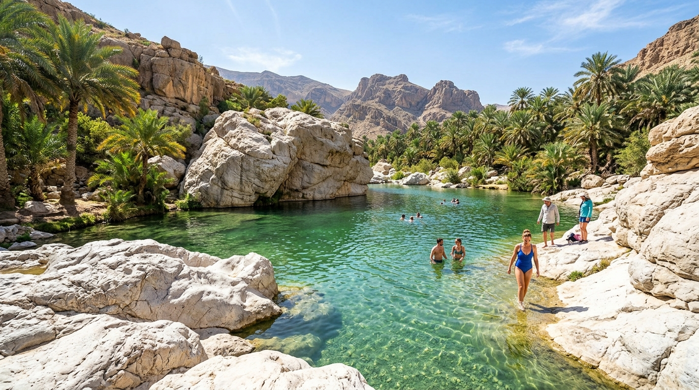
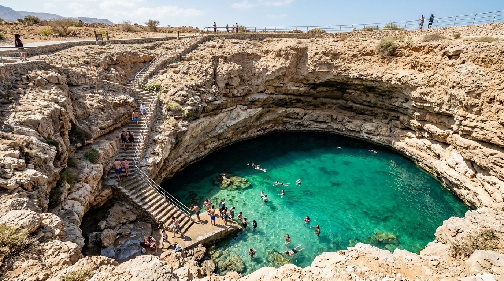
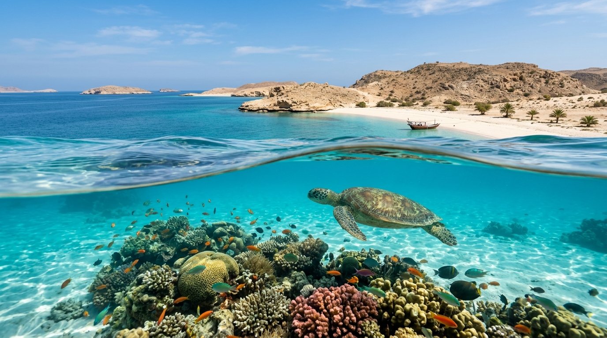
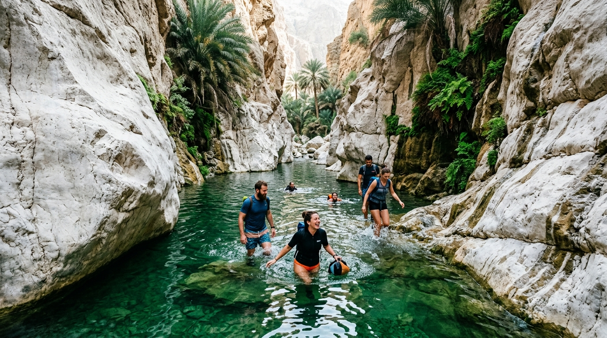
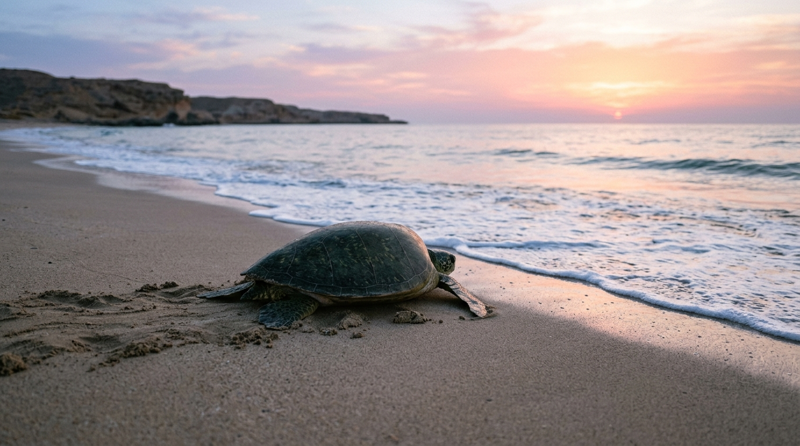
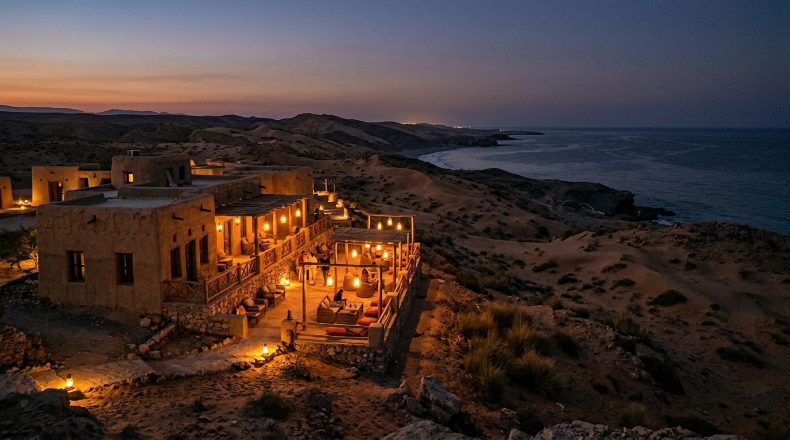
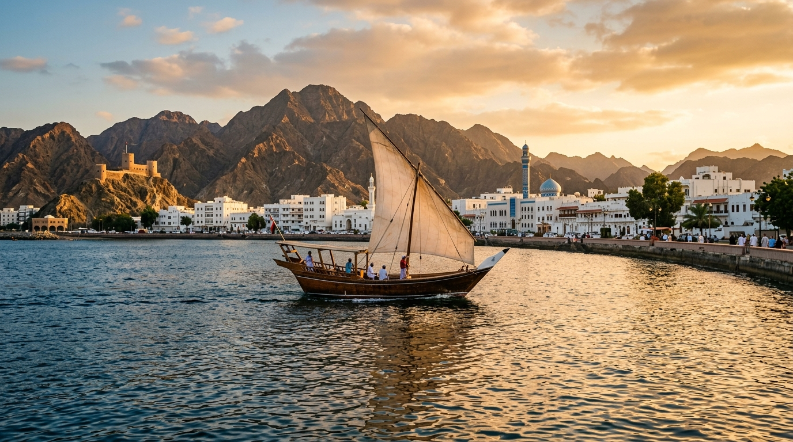

Trek through sheer limestone canyons to swim in hidden cave waterfalls, discover Bimmah Sinkhole, and observe nesting green sea turtles at Ras Al Jinz.
Key regional features, luxury accommodation standards, and seamless logistics that make Wadi Shab & Turtle Coast an effortless recommendation for your travelers.

A legendary canyon trek through palm groves ending in a swim through narrow limestone gaps into a secret waterfall cave.

A natural turquoise sinkhole crater filled with crystal-clear seawater perfect for a refreshing dip.

A protected coastal eco-reserve where endangered giant green turtles nest on pristine sandy beaches.

Hike deep into the canyon, swim through turquoise pools, and discover the hidden waterfall cave.
Inquire for more details →
Guided night ranger walk on Ras Al Jinz beach to observe nesting turtles and hatchlings returning to the ocean.
Inquire for more details →
ECO-RESERVE LODGEEco-lodge with direct access to the protected sea turtle nesting beach and ranger tours.
Inquire for more details →
3.5★ COASTAL HOTELComfortable base hotel for exploring Wadi Shab, Sur dhow shipyards, and coastal beaches.
Inquire for more details →Pandora Travel provides VIP airport fast-tracks, luxury chauffeured 4x4 Land Cruisers, and private dhow charters.
Optimal travel months run October through April with sunny pleasant weather across Muscat, deserts, and mountains.
Bedouin dune campfires, cliffside candlelit dining over grand canyons, and frankincense-infused gastronomy.
Combine Wadi Shab & Turtle Coast with 4x4 mountain drives and desert luxury glamping to create a seamless Oman circuit.